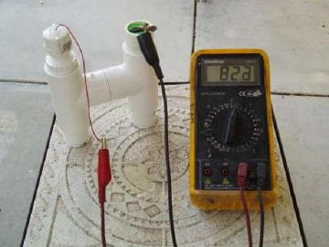
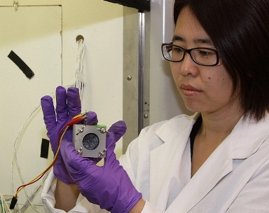
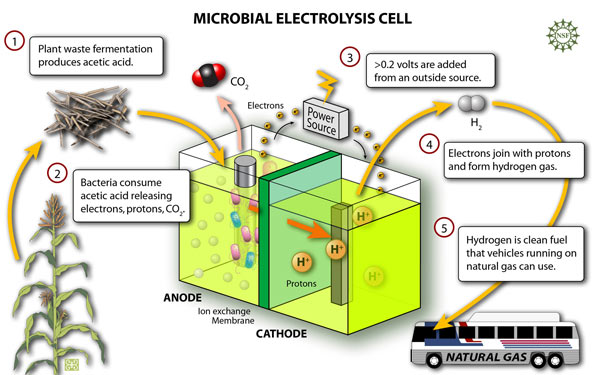
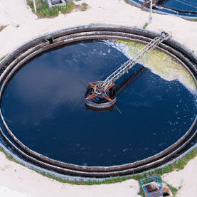
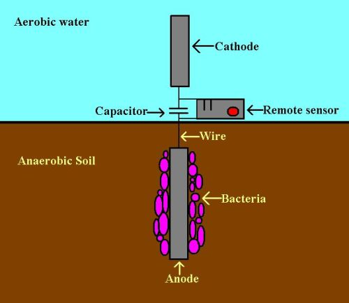

Electricity generation
MFCs are capable of converting the chemical energy stored in the chemical compounds in a biomass to electrical energywith the aid of microorganisms. Because chemical energy from the oxidization of fuel molecules is converted directly into electricity instead of heat, the Carnot cycle with a limited thermal efficiency is avoided and theoretically amuch higher conversion efficiency can be achieved (>70%) just like conventional chemical fuel cells. Chaudhury and Lovley (2003) reported that R. ferrireducens could generate electricity with an electron yield as high as 80%.  Generation of Electricity Higher electron recovery as electricity of up to 89% was also reported. An extremely high Coulombic efficiency of 97% was reported during the oxidation of formatewith the catalysis of Pt black. However, MFC power generation is still very low, that is the rate of electron abstraction is very low. One feasible way to solve this problem is to store the electricity in rechargeable devices and then distribute the electricity to end-users. Capacitors were used in their biologically inspired robots named EcoBot I to accumulate the energy generated by the MFCs and worked in a pulsed manner. MFCs are especially suitable for powering small telemetry systems and wireless sensors that have only low power requirements to transmit signals such as temperature to receivers in remote locations
MFCs themselves can serve as distributed power systems for local uses, especially in underdeveloped regions of the world. MFCs are viewed by some researchers as a perfect energy supply candidate for Gastrobots by self-feeding the biomass collected by themselves.  Researcher Holding a MFC Cell Realistic energetically autonomous robots would probably be equipped with MFCs that utilize different fuels like sugar, fruit, dead insects, grass and weed. The robot EcoBot-II solely powers itself by MFCs to perform some behavior including motion, sensing, computing and communication. Locally supplied biomass can be used to provide renewable power for local consumption. Applications of MFCs in a spaceship are also possible since they can supply electricity while degrading wastes generated onboard. Some scientists envision that in the future a miniature MFC can be im-planted in a human body to power an implantablemedical device with the nutrients supplied by the human body. The MFC technology is particularly favored for sustainable long-term power applications. However, only after potential health and safety issues brought by the microorganisms in the MFC are thoroughly solved, could it be applied for this purpose.
Biohydrogen
MFCs can be readily modified to produce hydrogen instead of electricity. Under normal operating conditions, protons released by the anodic reaction migrate to the cathode to combine with oxygen to form water. Hydrogen generation from the protons and the electrons produced by the metabolism of microbes in an MFC is thermodynamically unfavorable. Liu et al. (2005c) applied an external potential to increase the cathode potential in a MFC circuit and thus overcame the thermodynamic barrier. In this mode, protons and electrons  Schematic of MFC Producing Hydrogen produced by the anodic reaction are combined at the cathode to form hydrogen. The required external potential for an MFC is theoretically 110 mV, much lower than the 1210 mV required for direct electrolysis of water at neutral pH because some energy comes from the biomass oxidation process in the anodic chamber. MFCs can potentially produce about 8-9 mol H2/mol glucose compared to the typical 4 mol H2/mol glucose achieved in conventional fermentation. In biohydrogen production using MFCs, oxy-gen is no longer needed in the cathodic chamber. Thus, MFC efficiencies improve because oxygen leak to the anodic chamber is no longer an issue. Another advan-tage is that hydrogen can be accumulated and stored for later usage to overcome the inherent low power feature of the MFCs. Therefore, MFCs provide a renewable hydrogen source that can contribute to the overall hy-drogen demand in a hydrogen economy.
Wastewater treatment
The MFCs were considered to be used for treating waste water early in 1991. Municipal wastewater contains a multitude of organic compounds that can fuel MFCs. The amount of power generated by MFCs in the wastewater treatment process can potentially halve the electricity needed in a conventional treatment process that consumes a lot of electric power aerating activated sludges.  Waste Water Plant Using MFC MFCs yield 50-90% less solids to be disposed of. Furthermore, organic molecules such as acetate, propi-onate, butyrate can be thoroughly broken down to CO2 and H2O. A hybrid incorporating both electrophiles and anodophiles are especially suitable for wastewater treatment because more organics can be biodegraded by a variety of organics. MFCs using certain microbes have a special ability to remove sulfides as required in wastewater treatment. MFCs can enhance the growth of bioelectrochemically active microbes during wastewater treatment thus they have good operational stabilities. Continuous flow and single-compartment MFCs and membrane-less MFCs are favored for wastewater treatment due to concerns in scale-up. Sanitary wastes, food processing wastewater, swine wastewater and corn stover are all great biomass sources for MFCs because they are rich in organic matters. Up to 80%of theCODcan be removed in some cases and a Coulombic efficiency as high as 80% has been reported.
Biosensor
Apart from the aforementioned applications, another potential application of the MFC technology is to use it as a sensor for pollutant analysis andin situ process monitoring and control. The proportional correlation between the Coulombic yield of MFCs and the strength of the wastewater make MFCs possible biological oxygen demand (BOD) sensors. An accurate method to measure the BOD value of a liquid stream is to calculate its Coulombic yield.  A Diagram of MFC Sensor A number of works showed a good linear relation-ship between the Coulombic yield and the strength of the wastewater in a quite wide BOD concentration range. However, a high BOD concentration requires a long response time because the Coulombic yield can be calculated only after the BOD has been depleted unless a dilution mechanism is in place. Efforts have been made to improve the dynamic responses in MFCs used as sensors. A low BOD sensor can also show the BOD value based on the maximum current since the current values increase with the BOD value linearly in an oligotroph-type MFC. During this stage, the anodic reaction is limited by substrate concentration. This monitoring mode can be applied to real-time BOD determinations for either surface water, secondary effluents or diluted high BOD wastewater samples. MFC-type of BOD sensors are advantageous over other types of BOD sensor because they have excellent operational stability and good repro-ducibility and accuracy. An MFC-type BOD sensor constructed with the microbes enriched with MFC can be kept operational for over 5 years without extra maintenance, far longer in service life span than other types of BOD sensors reported in the literature.